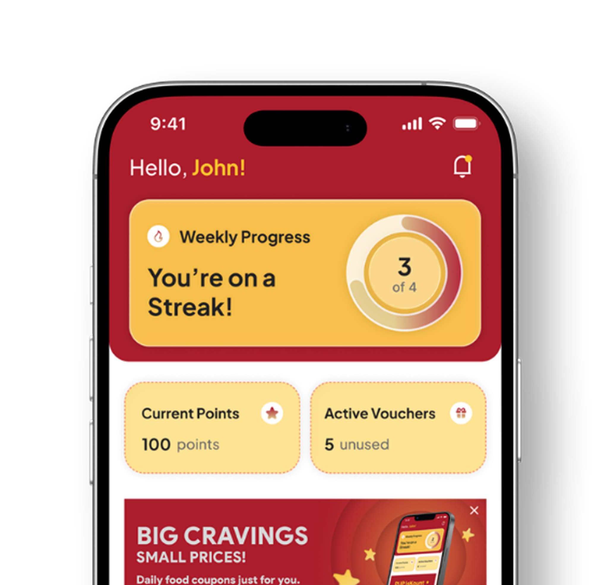
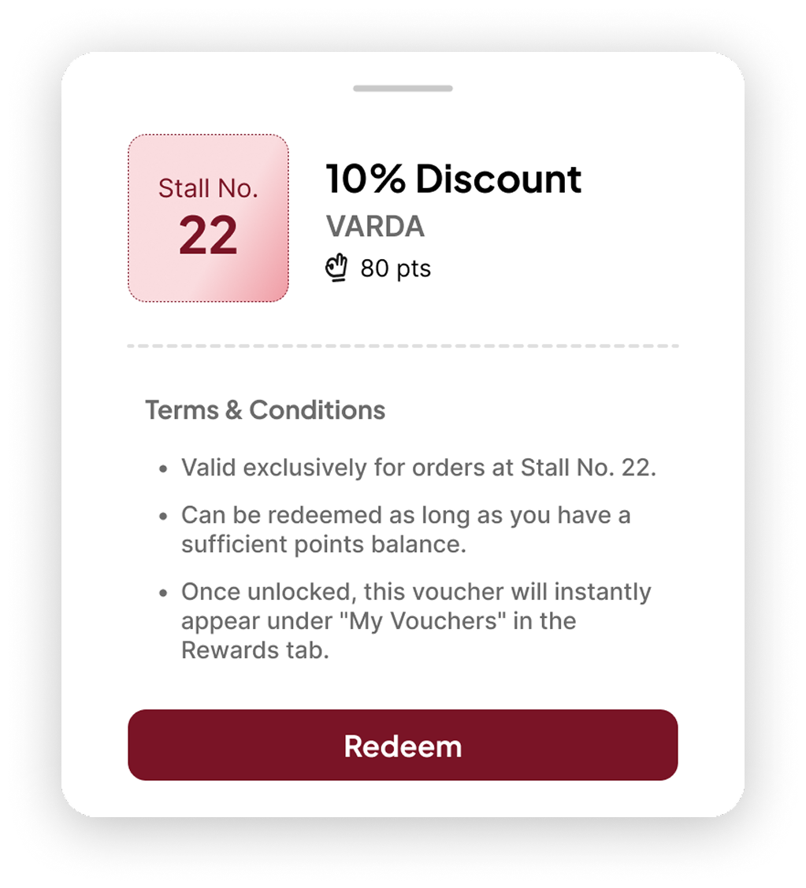
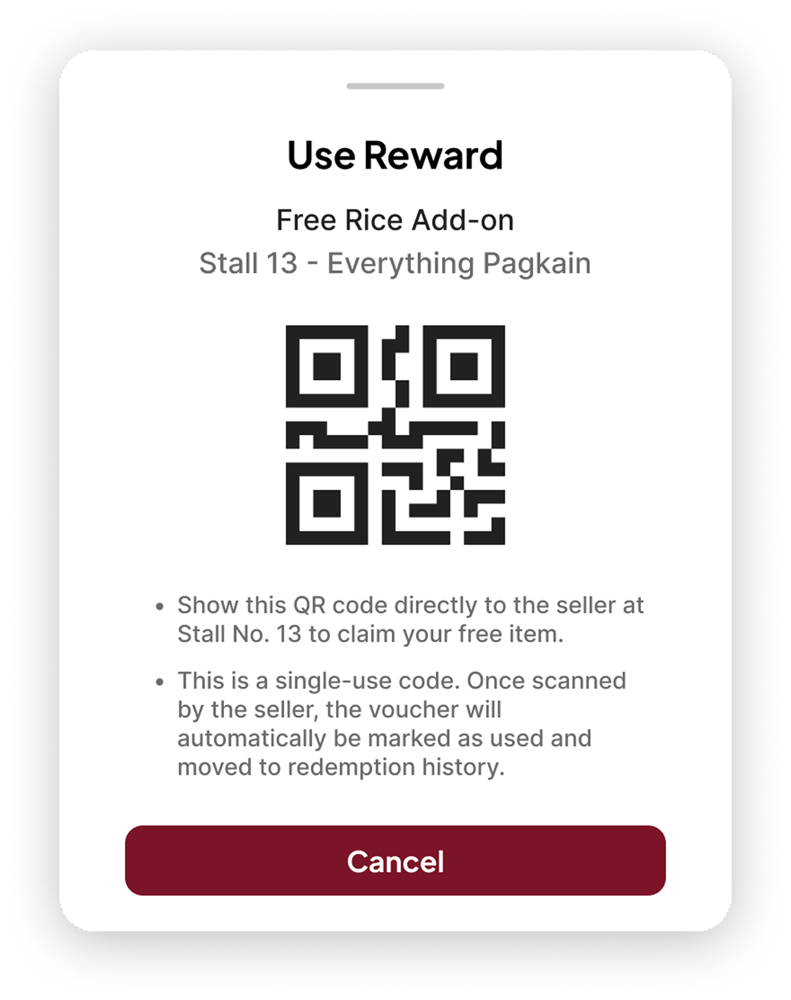
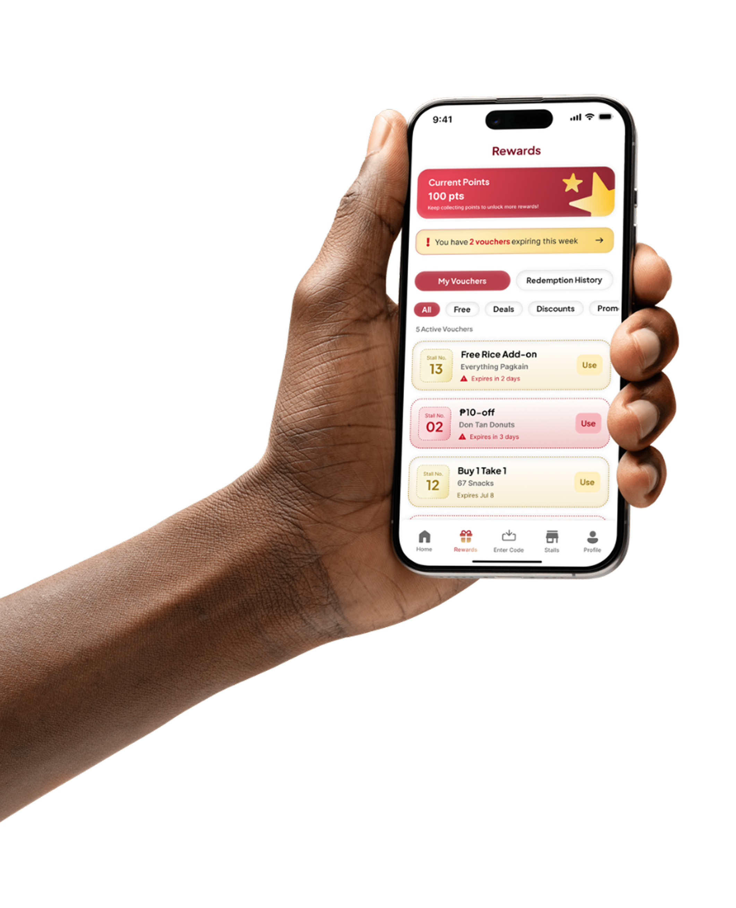
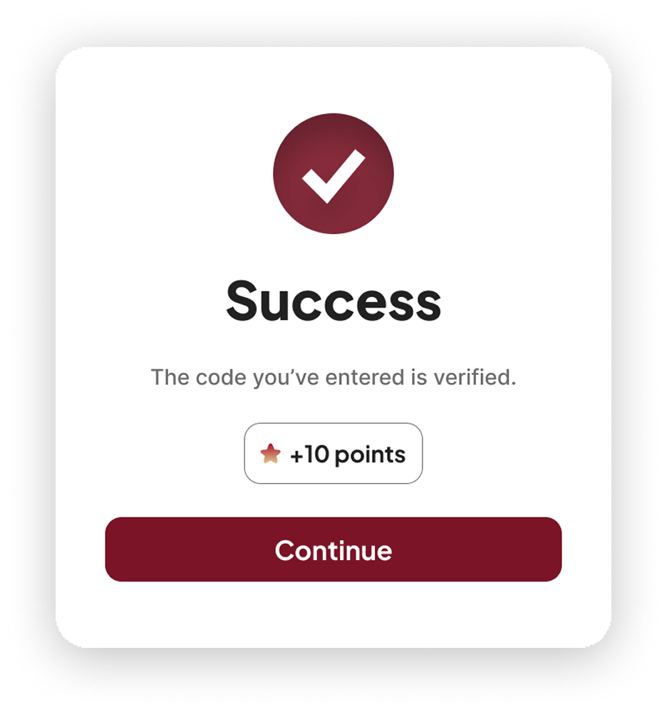

PUP IsKount
Loyalty and Rewards App for PUP Lagoon





About the Project
PUP IsKount is a loyalty app for the PUP Lagoon. Students here don’t spend much, they just come back a lot, so the app rewards that instead. Enter the code from your receipt stub, build a weekly streak, and redeem vouchers with a QR code. It’s made to be quick, since the Lagoon is crowded and the wifi isn’t great.
Goal
Design a loyalty system that rewards students for visiting a stall often instead of spending more, while staying quick enough to use in Lagoon peak periods.
Research Method &
Insights
Ran a survey with 39 PUP students who regularly eat at the Lagoon, covering purchase frequency, weekly food spend, pain points, and which reward types they’d actually want.
< ₱100
weekly food spend
1-3x
campus visits a week
82.1%
want streak-based rewards
The Approach
The UI look is inspired from e-wallet and rewards apps students already use, so nobody is confused about how it works. The colors are PUP’s own maroon, red, white, and mustard, which makes it feel like it belongs to the school. Headings use Plus Jakarta Sans and body text uses Inter, since both stay readable on small screens.
Since people use it while standing in line, I kept every screen simple. There’s a bottom nav bar on every main screen, buttons are big enough to tap quickly, and icons always come with labels. The streak tracker, success messages, and error states for invalid codes give instant feedback, so users don’t have to guess what just happened.

Results
We tested the hi-fi prototype with 5 students across 4 tasks: signing up, entering a stub code, checking the streak and rewards, and redeeming with a QR code.
90%
task success
82.5%
SUS score
80%
code-entry and QR redemption rate